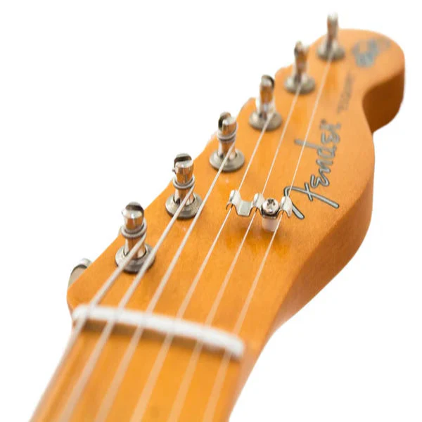
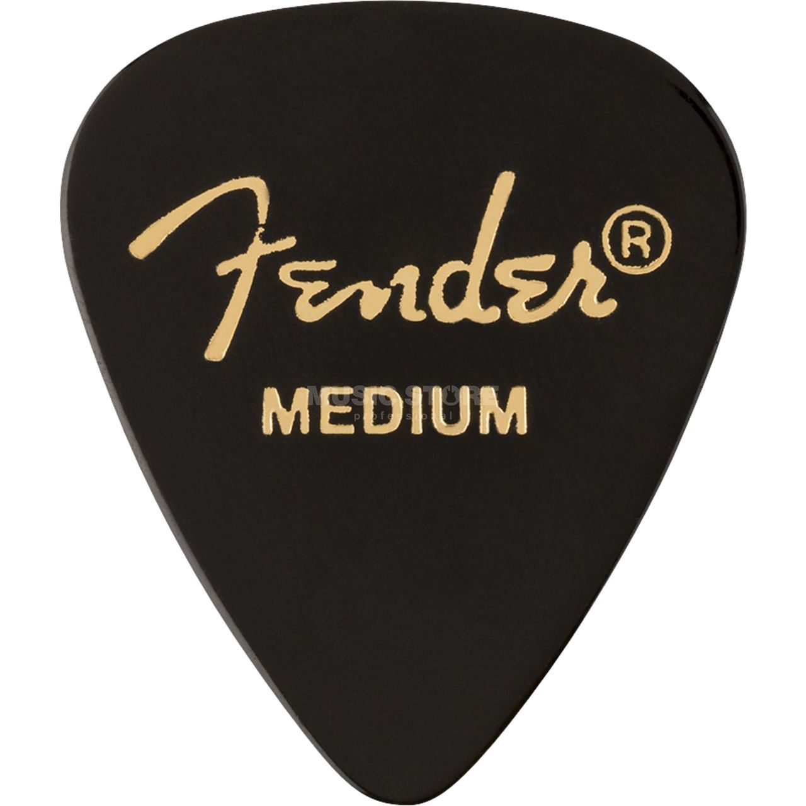

| Image | Name | Info |
|---|---|---|
 |
Guitar Strings | A guitar string is a string made of a particular material that is spanned over a wooden instrument or an instrument |
| Guitar Strap | Guitar straps give you freedom, portability, and support to comfortably play your guitar or bass | |
 |
Guitar Pick | A guitar pick is a plectrum used for guitars |
 |
Guitar Tuner | A device that measures the frequencies produced by vibrating strings on an electric guitar or an acoustic guitar |
 |
Capo | A capo is a small device that clamps onto the neck of a guitar and shortens the length of the strings |